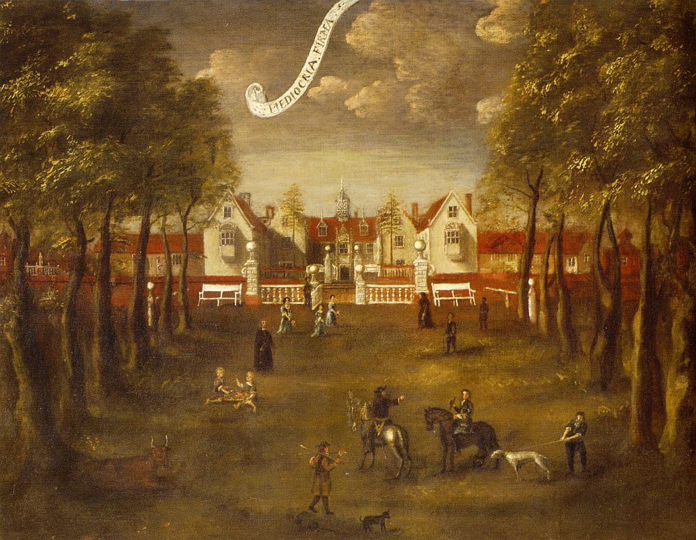

Redgrave House and Park
Redgrave Hall, often referred to in the context of its surrounding estate as Redgrave Park, served as the country
seat of Sir John Holt, Lord Chief Justice of England, from 1702 until his death in 1710. A distinguished lawyer and
judge renowned for his integrity and reformist rulings, Holt acquired the property in Suffolk from the heavily indebted
Sir Robert Bacon, 5th Baronet, who sold it to settle family obligations and relocated to a smaller Norfolk estate. At the
time of purchase, Holt was at the height of his career, having held the position of Lord Chief Justice since 1689. He maintained
a primary London residence in Bedford Row but used Redgrave as a rural retreat, dividing his time between judicial
duties in the capital and the quieter rhythms of country life. Though his tenure lasted only about eight years, the
estate marked the culmination of his professional success and provided a fitting ancestral-style home for a man of his
stature. He died in London on 5 March 1710 at age 67 and was buried in the chancel of St Mary's Church in Redgrave, where
a grand monument by sculptor Thomas Green commemorates him in judicial robes, flanked by allegorical figures.
During Holt's ownership, the house remained the substantial Tudor mansion originally built by Sir Nicholas Bacon
between 1545 and 1554, with flanking wings added in the 1560s. Constructed of red brick in a symmetrical yet traditionally
planned layout, it featured a central entrance leading to a screens passage, a two-storey great hall to one side, family
apartments in the left wing, and service areas to the right. Contemporary views from the mid-to-late 17th century depict
a picturesque gabled façade approached through two balustraded forecourts, crowned by a central octagonal cupola or turret
above an ornate porch bearing the Bacon motto "Mediocria firma" ("moderate things endure"). Elaborate cresting, pinnacles,
and oriel windows on the extended wings added grandeur. The interior included practical innovations for the period, such
as a piped water system drawing from a spring in the park. No major alterations or modernizations are recorded under Holt,
who appears to have occupied the house largely as the Bacons had left it—an imposing but somewhat old-fashioned Elizabethan
residence suited to a judge seeking dignified seclusion rather than fashionable updates.
The grounds and park at Redgrave during Sir John Holt's time retained their 16th-century character as a former medieval
deer park established by the abbots of Bury St Edmunds. Two walled gardens adorned with decorative turrets or pinnacles
flanked the house, while a viewing mount constructed in the 1560s offered elevated vistas for observing hunts or deer
coursing across the estate. A formal southern approach crossed a stream valley via a bridge and causeway, integrating
the landscape with the architecture. The parkland provided ample space for riding, hunting, and estate management, typical
pursuits for a landed gentleman of Holt's era, though the dramatic Capability Brown redesign—including the creation of a
serpentine lake, new stables, orangery, boathouse, and the iconic Round House folly—would only occur decades later in the
1760s under Holt's great-nephew Rowland. In Holt's day, the setting was more formal and enclosed, evoking the Tudor heritage
of the property rather than the naturalistic 18th-century park that later defined Redgrave.
Life at Redgrave Hall under Sir John Holt would have blended the responsibilities of estate oversight with the social and
reflective demands of a high-ranking legal figure. Holt lived there with his wife, Lady Ann (née Cropley), though their
marriage produced no children; household accounts and correspondence from the period are sparse, but the residence likely
supported a staff of servants, gardeners, and perhaps a steward to manage the farmlands and park. As Lord Chief Justice, Holt
may have hosted visiting legal colleagues, family members (including his brother Rowland, who inherited the estate), or local
Suffolk gentry for dinners and discussions in the great hall or more intimate withdrawing rooms. The home offered respite from
London's legal circuits, a place for reading, correspondence, and the quiet administration of justice from afar. Its enduring
legacy as Holt's final home is preserved not in the building itself—which was later remodelled and eventually demolished—but in
the church monument and the estate's historical records, evoking an era when England's foremost judge found solace amid the
ancient parklands of Suffolk.

The Bacon family in front of Redgrave Hall, c.1676 Public Domain